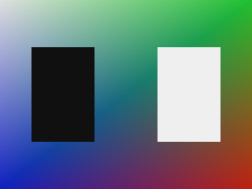

The two pipelines
The shader backend maps the two programmable stages of the Flipper onto the two programmable
stages of OpenGL (the XF onto a vertex shader, the TEV onto a fragment shader) and lets GL
rasterize. The software pipeline walks the whole pipeline itself, in the same modules
(xf.cpp, su.cpp, ras.cpp, tx.cpp,
tev.cpp, pe.cpp), with the software methods of a block carrying the
Soft prefix. The two paths share no rendering state, which is what makes the
pipeline a configuration variable rather than a compile-time choice — it can be switched on
the fly, and the choice is written back to the settings file.
| Setting | Meaning |
|---|---|
hardware.GFX_PIPELINE | 0 = the shader (OpenGL) backend, 1 = the software pipeline. Read at start-up. |
gxpipeline | The debugger / JDI command: reports the active pipeline or switches it (gxpipeline soft, gxpipeline shader). The switch takes effect on the next frame and is stored in the settings. |
Gekko --PI FIFO--> CP --commands--> XF(soft) --> SU(soft) --> RAS(soft) --> TEV(soft) --> PE(soft)
^ ^
TX(soft, TMEM) |
v
EFB memory --(copy engine)--> XFB
|
vi.cpp scans it outThe blocks
XF — the transform
A high-level transformation of the vertex, not an interpreter of the XF microcode: the
geometry and texture matrix multiplies, the projection combine, the per-vertex lighting
of the two channels and the texture coordinate generation (regular, colour and the dual
transform). The bottom of the pipe then divides by the homogeneous component and maps
the result through the viewport registers into window space — EFB pixels
with the origin at the top left corner, a 24-bit depth and 1/w for the
perspective correction of the rasterizers.
SU — the setup
The primitive assembler and the setup stage. Points, lines, strips, fans and the Flipper
quads become triangles, and every triangle gets the record the rasterizer walks with: the
bounding box, the three edge coefficients and the interpolation plane of every
attribute. The perspective-correct parameters are carried as planes of
value/w next to the plane of 1/w — the division the hardware
performs at the pixel centres.
RAS — the quad walk
The rasterizers walk the primitive the way the hardware does: on the 2×2-pixel
quad grid, one quad at a time, with a 12-bit coverage mask
(three sub-samples per pixel) and the top-left rule on the shared edges. Only the pixels
with a covered sub-sample are shaded, at their centre or at one of their covered
sub-samples. The sub-sample positions come from GEN_MSLOC0..3.
TX — a real TMEM
The 32 banks of 16K × 16-bit words of the texture memory, in the two 512 KB halves.
TX_LOADBLOCK0..3 and TX_LOADTLUT0/1 stream main-memory tiles and
palette entries into it, hardware-managed images are fetched through a tag cache in it,
and the sampler follows the LOD computation, the clamp / repeat / mirror coordinate
operations and the filter datapath: all the texel formats including the colour-index
ones through the TLUT, bilinear S/T lerps with 6-bit fractions and the trilinear blend.
TEV — the combine
The stage datapath, run per shaded sample: up to 16 combine stages over the colour register file, the Rev-B K constants, the alpha compare modes, the Z-texture environment, the fog unit and the final alpha function.
PE — the EFB and the XFB
A real EFB memory array, addressed like the CPU window of the hardware (the colour word
of the pixel (x, y) sits at y * 1024 + x, the address bit 22
selects the Z plane). It performs the Z test, the blend and the logic ops with the write
masks, and the copy engine: the display copy that turns a rectangle into the packed
YUV 4:2:2 XFB in main memory, the texture copy into the tiled texture
formats, and the clear a copy may ask for.
What it draws
The pictures below are rendered by the unit tests and published into the test report. The first one is a scene the software pipeline drew in the order a title would submit it: a full-screen quad with a colour gradient (the four-corner interpolation of the colour rasterizer), a triangle whose vertex colours interpolate across it, a red quad that is nearer than the triangle — the Z unit rejects the samples behind it — and a quad whose texels are read out of TMEM.

The second one is the same frame after GXCopyDisp: the copy engine converted the
EFB rectangle into packed YUV 4:2:2 in main memory, and this is that XFB decoded back to RGB.
The chroma of every pixel pair is averaged by the 4:2:2 downsampling, which is why the edges
of the two rectangles show a chroma transition.

The tests drive the hardware API, not the backend
testing/gfx_soft_test.cpp programs the pipeline the way the console is
programmed: the XF register space (the geometry matrix, the projection combine and the
viewport registers, exactly the registers GXSetProjection /
GXSetViewport write), the bypass register space (the shared GEN registers, the
rasterizer texture bindings, the texture load commands, the TEV stage environments and the
pixel engine state) and object-space vertices. What it reads back is the hardware's own
output: the EFB memory of the pixel engine and the XFB the copy engine wrote. No OpenGL call
is involved — the software pipeline never opens a GL context.
cd scripts/VS2026
MSBuild pureikyubu_test.vcxproj -p:Configuration=Debug -p:Platform=x64
vstest.console.exe x64/Debug/pureikyubu_test.dll /Tests:Soft_What is not there yet
Implemented
The XF transform and viewport mapping, the setup (planes and edges, culling, zfreeze), the quad walk with the 12-bit coverage masks and the scissor, the perspective-correct interpolation of the colours and the texture coordinates, the level of detail and the point / bilinear / trilinear filtering out of TMEM (all texel formats, the TLUT, CMPR), the 16-stage TEV combine with the K constants, the Z-texture environment, the fog and the alpha function, the EFB Z test / blend / logic ops / write masks / constant alpha, and the copy engine's clear, display copy (XFB) and texture copy.
Not implemented (yet)
The indirect (bump) texturing of the TEV; the anisotropic filtering and the
diag_lod / lodclamp refinements; the round and
field_predict motion-compensation modes; the anti-aliased EFB (a 12-bit
coverage mask selects the sample to shade, but the EFB stores one colour per pixel) and
the EFB pixel types other than RGB8 — which is also why the dither matrix is not applied,
since for RGB8 it is the identity; the vertical filter coefficients of the display copy
and the YUV/4:2:0 copy modes; and the EFB CPU window (Cpu2Efb).
Documentation
Wiki: Software GFX
The whole page: the blocks, the specification each one is written from, the model's deliberate choices and what is still missing.
Wiki: GFX
The shader backend: the vertex and fragment programs, the textures, the indirect texturing and the JDI commands.
The specifications
The hardware pages the software pipeline is written from:
gfx-xf.md, gfx-su.md, gfx-ras0/1/2.md,
gfx-tc.md, gfx-tf.md, gfx-tev.md,
gfx-pe.md and video-interface.md.